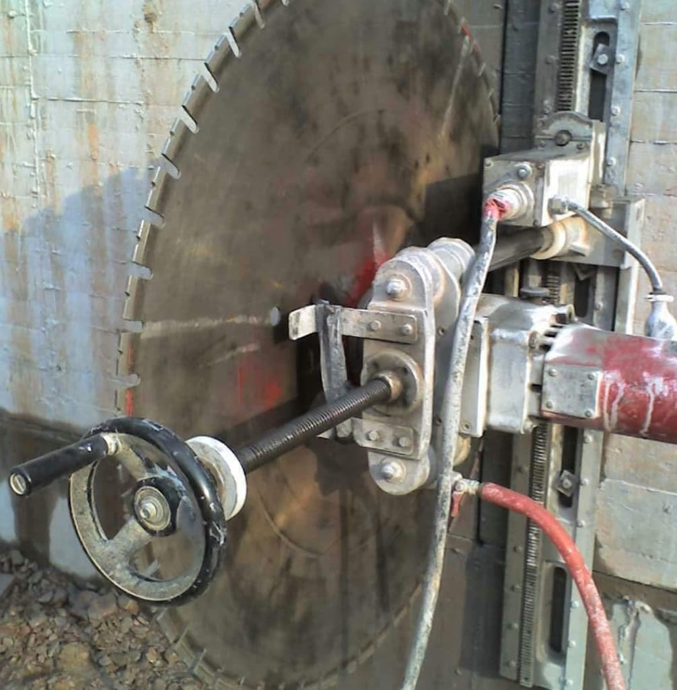
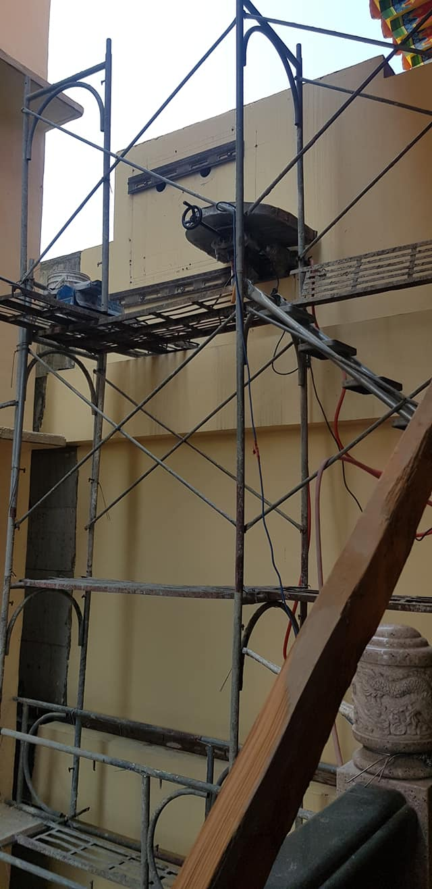
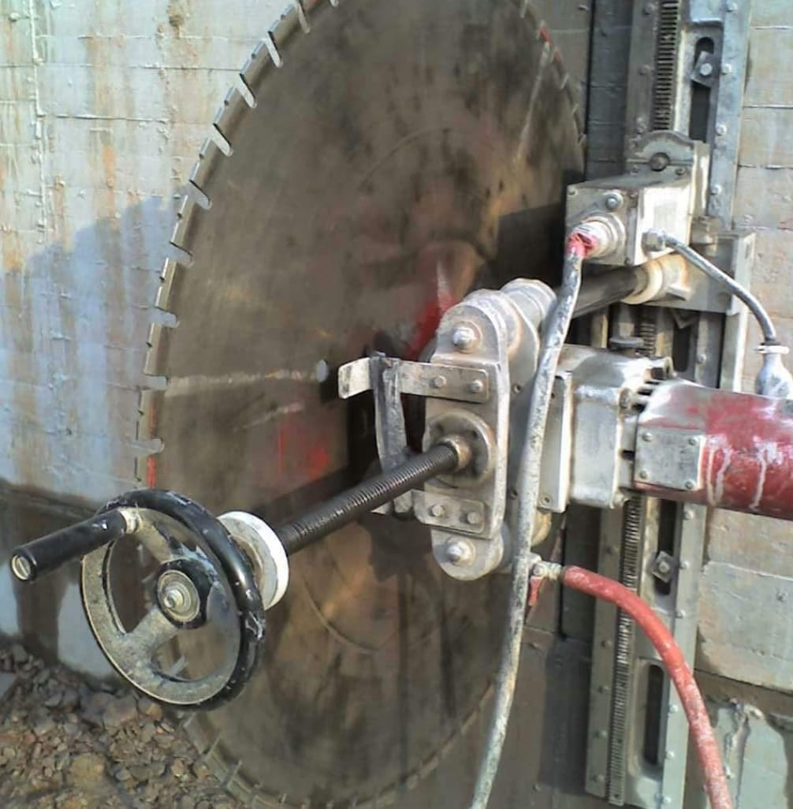
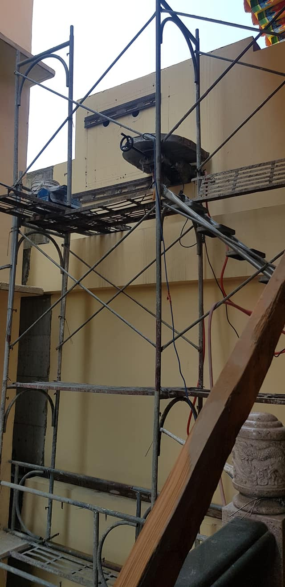

職人介紹
"黃順興"黃師傅擁有二十年工地經驗的老師傅， 在切割鑽孔有自己的一套專業， 在如板模、植筋等方面都有涉略。 是老闆的同時也是專業的師傅，待人親切，做人實在。
"黃順興"黃師傅擁有二十年工地經驗的老師傅， 在切割鑽孔有自己的一套專業， 在如板模、植筋等方面都有涉略。 是老闆的同時也是專業的師傅，待人親切，做人實在。
什麼是牆壁切割?什麼時候需要牆壁切割?
牆壁切割顧名思義就是指對牆壁進行切及割的的工程。
假如您需要在原先有牆面的地方開一扇窗或門。
那麼這個時候便需要對牆面進行切割。
切割完就立即可以安裝門窗嗎?
答案是不一定。根據牆體的狀況，有時會需要打石的方式處理。
但請放心，這我們會協助您聯絡其他所需的師傅上門協助。
牆壁鑽孔是什麼?何時需要在牆壁鑽孔?
牆壁鑽孔的用途十分廣泛，不限於牆壁，連地板也可鑽孔。
通常用於化糞池清洗、冷氣安裝、排水孔安裝、排氣孔安裝及配線安裝等等。
所以鑽孔之後是含安裝嗎?
鑽孔的部分跟安裝的部分並非是同一門專業，所以若您有安裝需求，
我們可以協助您連絡相關師傅上門處理。
植筋用途是?
在新建工程或者是老舊建築物的維護補強，甚至在橋樑工程、水利工
程、港灣工程等，皆會採用此工法。
那何時需要用到植筋?
植筋的部分涉及到擴建等其他問題，若您想瞭解可以來電詢問。


 


